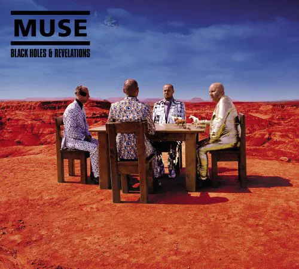

Black Holes and Revelations - Muse

Black Holes and Revelations é o quarto álbum de estúdio da banda inglesa de rock alternativo Muse. Foi lançado no começo do mês de julho de 2006. Na sua primeira semana, atingiu o número de 115.144 cópias vendidas no Reino Unido, ultrapassando o número de vendas da primeira semana de seu álbum anterior, Absolution.
Tracklist